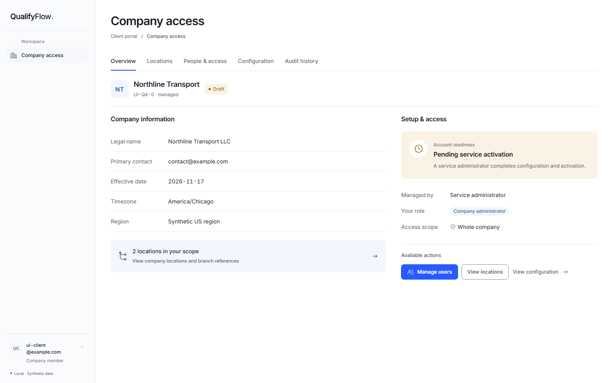
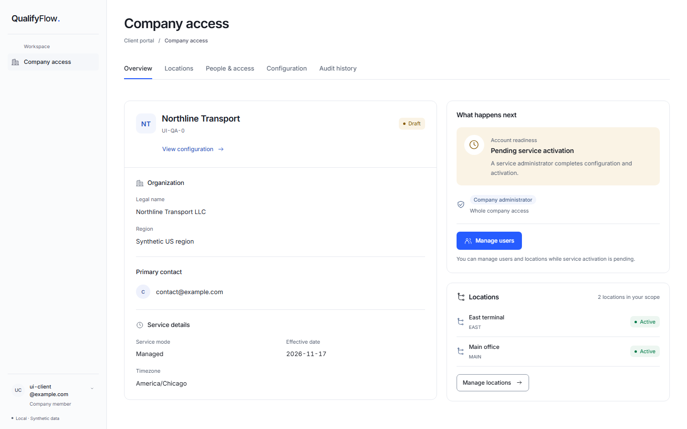
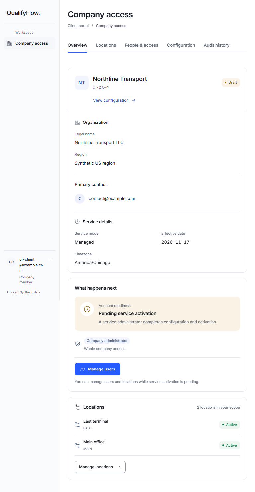
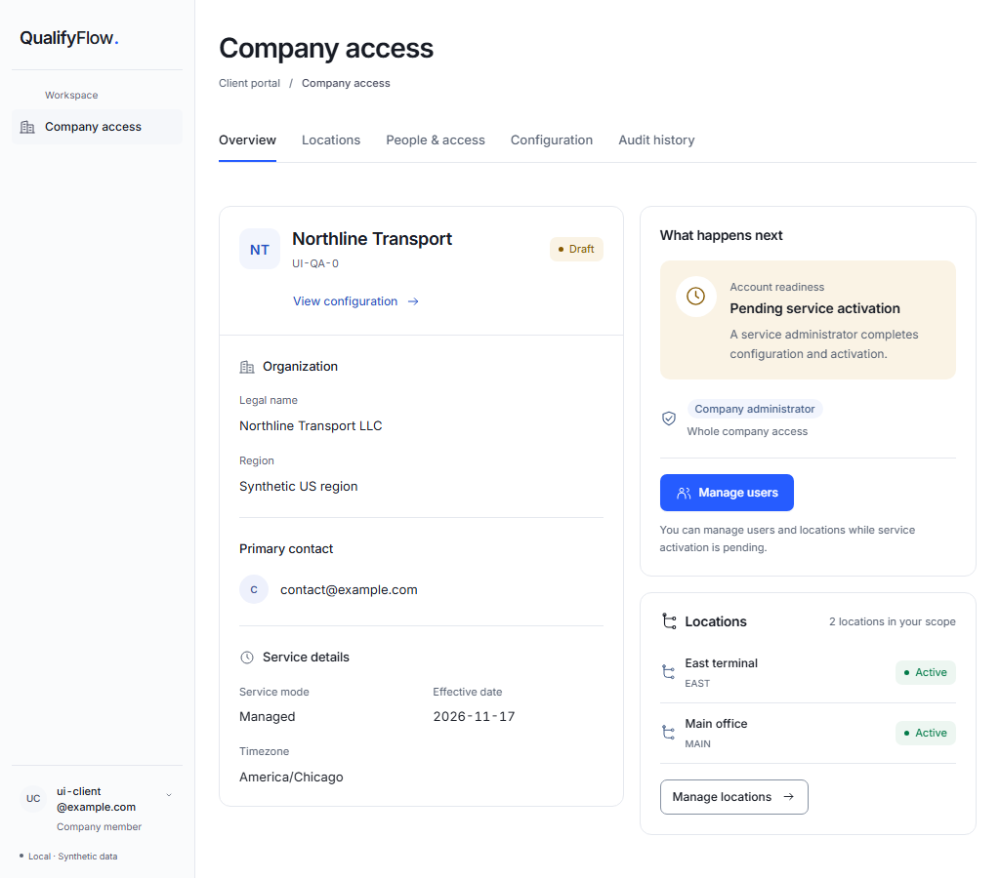
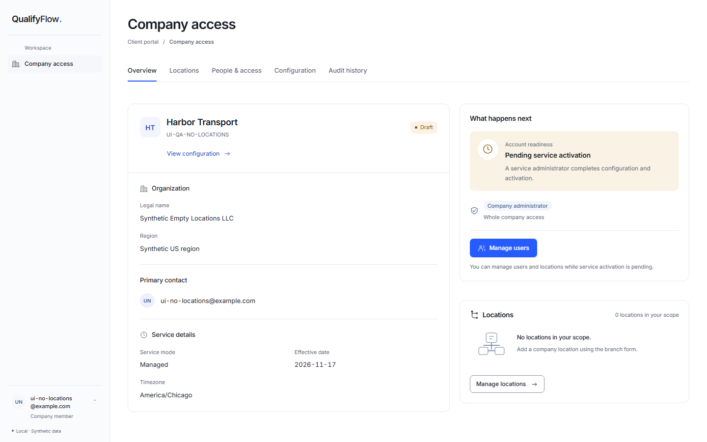
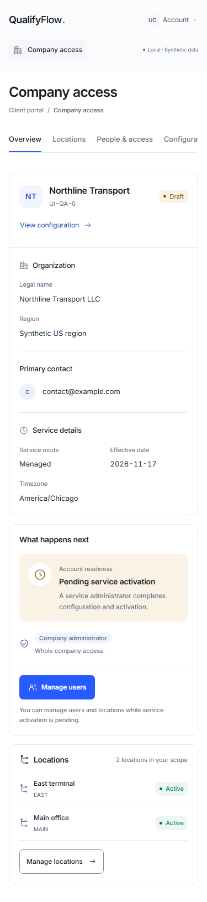
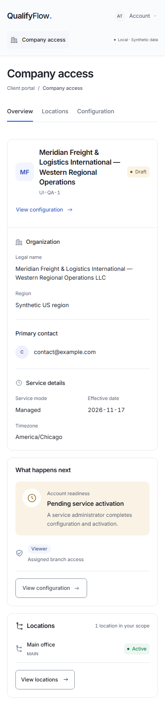

Company profile, readiness and locations
Actual before/after application captures using synthetic persisted records. Sidebar, tabs and security flow retained. Design and test report · Raw browser results
Same client and viewport · 1440px
Before: open text columns
After: three task-driven modules
Tablet and smaller desktop
768px
1024px
Empty locations · actual account state

Phone · 375px
Company administrator
Long company name and scoped viewer